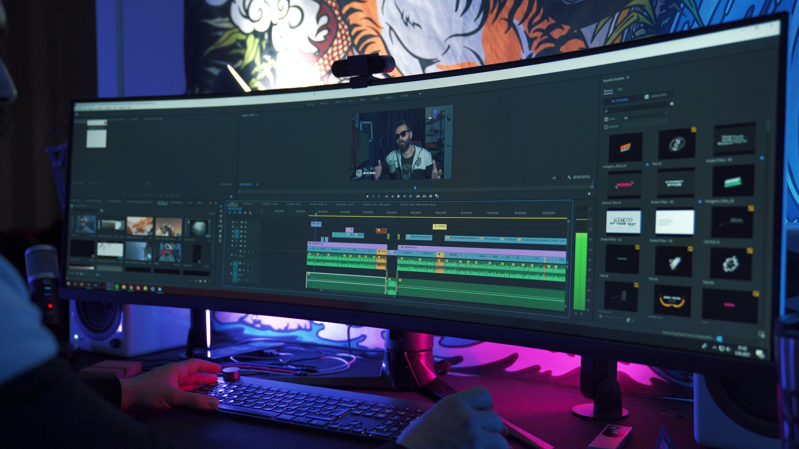
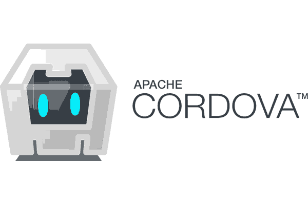

Build & Service Web Presence
Sociale media is een verzamelbegrip voor online platformen waar gebruikers, zonder of met minimale tussenkomst van een professionele redactie, de inhoud verzorgen. Hoofdkenmerken zijn interactie en dialoog tussen de gebruikers.
Mensen delen verhalen, kennis en ervaringen door berichten te publiceren of door gebruik te maken van ingebouwde reactiemogelijkheden. Voorbeelden van dit laatste zijn weblogs, waar lezers reacties achterlaten.
Facebook Foursquare GitGub Google+ Instagram LinkedIn Pinterest Tumblr Twitch Twitter YouTube
 De term multimedia als verzamelnaam voor visuele en auditieve opslag en informatie. Uitingen kunnen in principe op elke WebPage in principe op elke plek worden gepresenteerd.
Embedded wil zeggen geïntegreerd, dus ingebouwde weergave in zelfde "browser-tab" als website. Onderstaand in grijze kaders voorbeelden.
Bij linken naar een andere "externe" Website en ook PDF documenten is het gebruikelijk om een nieuwe "target="_blank" browser-tab te openen(*) voor weergave. Maar presentatie kan ook embedded zijn.
 Web2App is techniek waarbij een bestaande website wordt ingepakt en gelanceerd als native App in Apple Store en Google Play Store.
Ontwerp en gebruik van Mobile Apps qua handling en flow is specifiek. Zowel wat betreft formaat van scherm als het niet nodig hebben van een toetsenbord. WebTeam levert websites die functioneel geschikt zijn voor porting naar Mobile.
→ zie: Wikipedia Apache Cordova
→ zie: Manual Cordova Configuratie